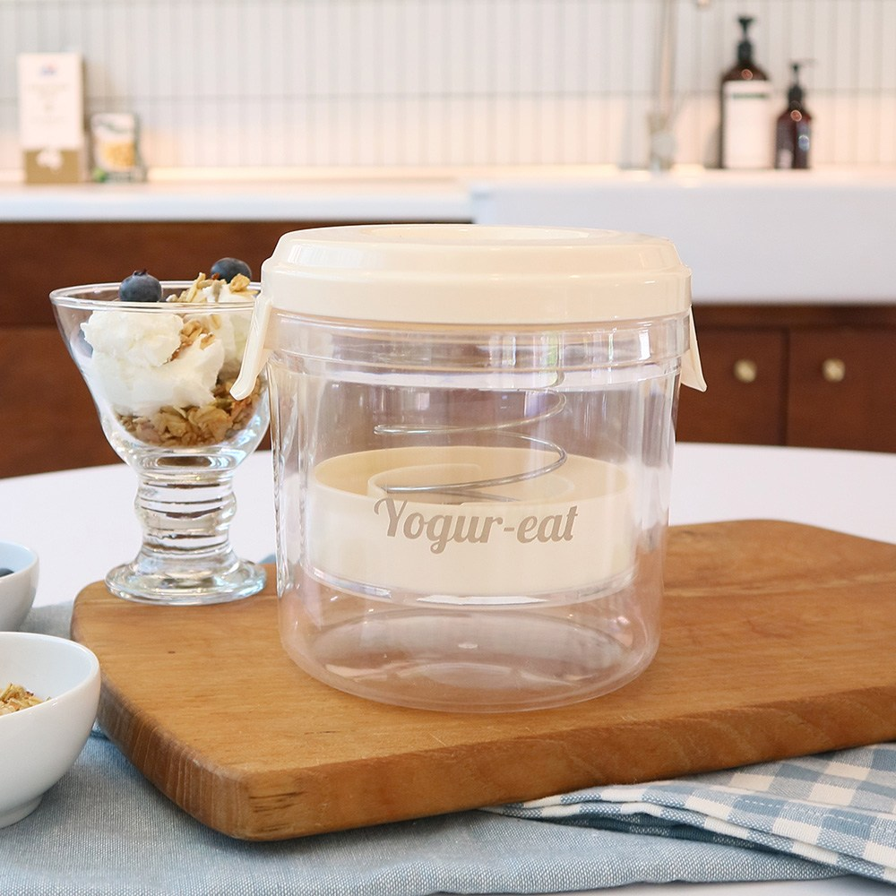
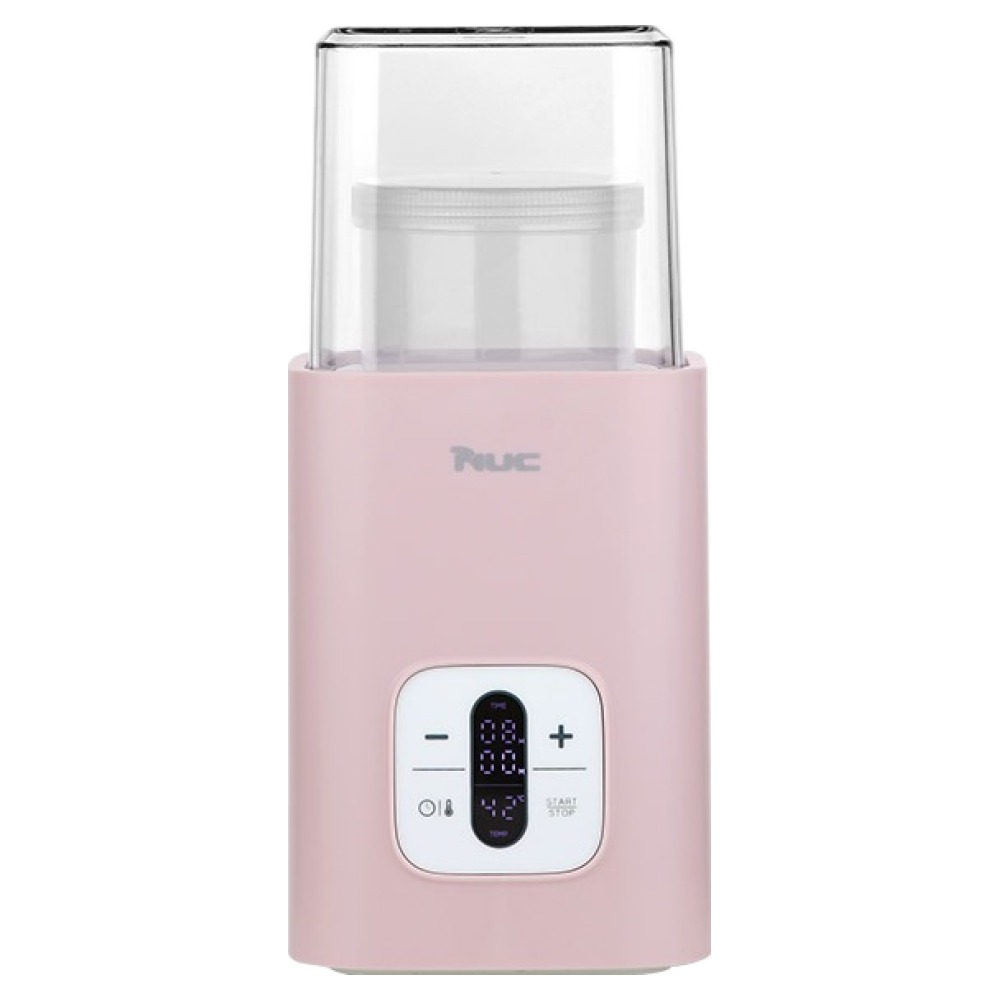
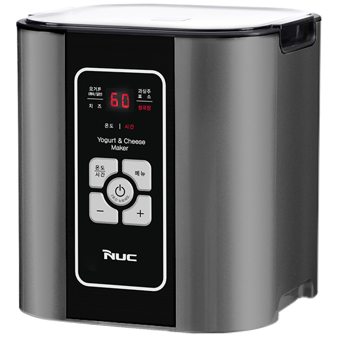

홈 › 제품리뷰 › 식품/먹거리
그릭요거트, 유청분리기냐 발효 요거트메이커냐
작성: 생활서식 모음 · 2026-07-23
파트너스 활동의 일환으로 일정액의 수수료를 지급받습니다
🛒 오늘의 쿠팡 특가 보러가기 →
그릭요거트 만들려는데 기계 종류가 헷갈리죠?
핵심은 "방식(유청분리 vs 발효)과 용량, 편의" 3대 를
"시판 요거트를 그릭으로" "우유로 직접 발효" "온도까지 스마트하게"용도별 정답 까지 담았으니
📋 목차
그릭요거트, 유청분리기냐 발효 요거트메이커냐 — 결론 먼저 스펙 비교표: 한눈에 보기 그릭요거트 기계 고를 때 봐야 할 4가지 유청분리냐 발효냐, 뭘 사야 할까? 자주 묻는 질문 (FAQ) 결론: 한 줄 요약
그릭요거트, 유청분리기냐 발효 요거트메이커냐 — 결론 먼저
그릭요거트 기계는 "방식" 이 8할이에요.엔유씨 요거트메이커 가 무난합니다. 시판 요거트를 사서 유청만 빼 그릭으로 만들 거면 저렴한 유청분리기, 온도·시간까지 스마트하게면 상위 발효기입니다.
1 유청분리·입문 (가성비 초이스)
가성비

1만원대 유청분리기
1. 요거잇 유청분리기 (그릭 메이커)
1만원대 유청분리기 시판 요거트 → 그릭 발효 없이 간단
발효기는 아니지만
추천 대상
시판 요거트를 사서 그릭으로 만들려는 분 발효 과정 없이 간단히 하려는 분 저렴하게 그릭요거트를 시작할 분 장점
1만원대로 부담 없이 그릭요거트를 만들 수 있음 시판 플레인 요거트를 넣고 유청만 빼면 꾸덕한 그릭 완성 발효기가 아니라 전기·발효 관리가 필요 없어 간단 단점
이 제품은 유청분리(그릭 전환)용 입니다. 우유로 직접 발효면 2번 요거트메이커, 온도·스마트면 3번으로 가세요. "시판 요거트를 그릭으로"면 가성비 최고예요.
한줄 리뷰
"시판 요거트 사서 꾸덕한 그릭으로만"이면 유청분리기로 충분합니다. 간단하고 저렴해요. 우유로 직접 발효하려면 2·3번을 보세요.
주요 스펙
제품: 요거잇 유청분리기 (그릭 메이커) 방식: 유청분리(시판 요거트 → 그릭) 용도: 그릭요거트 전환 배송: 로켓배송 가격: 약 10,990원 (변동 가능) ※ 실제 스펙·가격과 차이가 있을 수 있습니다
2 우유 발효 (베스트 초이스)
베스트

발효 요거트메이커
2. 엔유씨 요거트 메이커 (NYM-200K)
우유로 요거트부터 직접 발효
추천 대상
우유로 요거트를 처음부터 직접 만들려는 분 시판보다 저렴하게 많이 만들려는 분 엔유씨 브랜드 신뢰를 원하는 분 장점
우유+유산균을 넣고 발효해 요거트를 직접 만듦 시판 요거트를 계속 사는 것보다 장기적으로 경제적 엔유씨 브랜드라 기본기·접근성이 좋음 단점
발효 시간(수 시간)이 필요하고, 유청분리는 별도 과정 시판 요거트를 그릭으로만이면 1번, 온도·스마트 편의면 3번입니다. 2번은 "우유 발효 요거트메이커" 의 실속 구간 — 직접 만들기에 무난합니다.
한줄 리뷰
"우유로 요거트부터 직접, 저렴하게 많이"면 발효 요거트메이커가 알찹니다. 계속 사먹는 것보다 이득이에요. 온도·스마트 편의면 3번을 보세요.
주요 스펙
제품: 엔유씨 요거트 메이커 (NYM-200K) 방식: 발효(우유+유산균) 용도: 홈메이드 요거트 배송: 로켓배송 가격: 약 49,000원 (변동 가능) ※ 실제 스펙·가격과 차이가 있을 수 있습니다
3 온도·스마트 (프리미엄)
프리미엄

스마트 요거트메이커
3. 엔유씨 스마트 요거트 메이커 (NYM-8500K)
온도·시간 스마트 제어 요거트·그릭 등 다양 완성도 있는 발효
온도·시간까지 알아서
추천 대상
온도·시간을 정확히 제어해 실패 없이 만들려는 분 요거트·그릭·다양한 발효식을 하려는 분 완성도·편의를 중시하는 분 장점
온도·시간을 스마트하게 제어해 발효 실패가 적음 요거트·그릭 등 다양한 발효식에 대응 완성도 있는 구성으로 편하게 만듦 단점
가격이 있고, 단순히 유청분리만 하려면 과한 스펙 시판 요거트를 그릭으로만이면 1번, 기본 발효면 2번이 합리적입니다. 3번은 온도·스마트 제어로 실패 없이 다양하게 만들려는 분에게 값어치가 있습니다.
한줄 리뷰
"발효 온도·시간을 정확히, 실패 없이 다양하게"면 스마트 발효기가 만족스럽습니다. 온도 관리가 편해요. 단순 유청분리·기본이면 1·2번이 합리적입니다.
주요 스펙
제품: 엔유씨 스마트 요거트 메이커 (NYM-8500K) 방식: 발효(온도·시간 스마트 제어) 용도: 요거트·그릭 등 다양 배송: 로켓배송 가격: 약 91,900원 (변동 가능) ※ 실제 스펙·가격과 차이가 있을 수 있습니다
스펙 비교표: 한눈에 보기
가격·풍량·무게 중 본인에게 중요한 기준부터 보세요. "최고" 표시는 3제품 중 객관적 1위 값입니다.
← 좌우로 스크롤 →
그릭요거트 기계 고를 때 봐야 할 4가지
방식만 알아도 "발효 실패·과한 구매" 실패를 막습니다.
1) 방식 — 유청분리 vs 발효 (가장 먼저)
유청분리기: 시판 요거트의 유청을 빼 꾸덕한 그릭으로요거트메이커: 우유+유산균을 발효해 요거트부터시판 요거트를 그릭으로만이면 유청분리기로 충분 2) 용량 — 한 번에 만드는 양
혼자·소량이면 작은 용량, 가족이면 넉넉한 용량 많이 만들어 두고 먹으면 대용량이 효율적 보관 용기·냉장 공간도 함께 고려 3) 온도·시간 제어 — 발효 실패 방지
발효는 온도가 중요 — 온도 제어가 되면 실패가 적음 스마트 제어는 시간까지 맞춰 편리 기본 발효기는 사용법을 잘 지켜야 실패가 적음 4) 세척·위생 — 발효는 위생이 핵심
발효 용기·부품이 분리·세척되는지 확인 위생 관리가 안 되면 발효가 실패하거나 상할 수 있음 열탕 소독 가능 여부 등도 확인 유청분리냐 발효냐, 뭘 사야 할까?
만드는 방식만 정하면 답이 나옵니다.
시판 요거트를 그릭으로: 1번 요거잇 유청분리기 → 1만원대우유로 직접 발효: 2번 엔유씨 요거트메이커 → 홈메이드온도·스마트: 3번 엔유씨 스마트 → 실패 없이자주 묻는 질문 (FAQ)
Q1. 유청분리기랑 요거트메이커, 뭐가 다른가요? 역할이 다릅니다. 유청분리기는 이미 만들어진(시판) 플레인 요거트에서 물기(유청)를 빼내 꾸덕한 그릭요거트로 만드는 도구입니다. 요거트메이커는 우유에 유산균을 넣고 발효시켜 요거트 자체를 처음부터 만드는 기계입니다. 시판 요거트를 그릭으로만 만들려면 유청분리기, 우유로 요거트부터 직접 만들려면 요거트메이커를 고르세요.
Q2. 그릭요거트는 집에서 만들면 더 저렴한가요? 많이 먹을수록 이득입니다. 시판 그릭요거트는 값이 있는데, 유청분리기로 일반 요거트를 그릭으로 만들거나 요거트메이커로 우유부터 발효하면 재료비가 훨씬 적게 듭니다. 특히 온 가족이 자주 먹는다면 초기 기계값을 금방 회수합니다. 다만 소량만 가끔 먹는다면 사먹는 게 편할 수 있으니, 소비량을 기준으로 판단하세요.
Q3. 요거트메이커로 발효가 실패하는 이유는 뭔가요? 온도와 위생이 주된 원인입니다. 유산균은 적정 온도에서 발효되는데, 온도가 너무 낮거나 높으면 발효가 안 되거나 실패합니다. 온도 제어가 되는 제품이 실패가 적은 이유입니다. 또 용기·기구가 깨끗하지 않으면 잡균이 번식해 실패하거나 상할 수 있습니다. 열탕 소독 등 위생 관리를 지키고, 신선한 우유와 적정량의 유산균을 사용하세요.
Q4. 유청(분리된 물)은 버려야 하나요? 버리지 않고 활용할 수 있습니다. 그릭요거트를 만들 때 빠지는 유청에는 단백질 등 영양이 남아 있어, 요리·베이킹·스무디 등에 활용하는 분이 많습니다. 다만 활용할 계획이 없으면 버려도 됩니다. 유청분리기는 이 유청을 깔끔하게 분리해주는 도구라, 꾸덕한 그릭 식감을 좋아한다면 유청을 충분히 빼면 됩니다.
Q5. 온도·시간 스마트 제어가 꼭 필요한가요? 실패를 줄이고 다양하게 만들려면 유용합니다. 스마트 제어는 발효에 적정한 온도와 시간을 자동으로 맞춰줘 발효 실패가 적고, 요거트 외 다양한 발효식에도 대응합니다. 다만 기본 요거트메이커도 사용법을 잘 지키면 충분히 만들 수 있고, 단순히 시판 요거트를 그릭으로만 만들 거면 유청분리기로 충분합니다. 자주·다양하게 만들면 스마트 제어가 편합니다.
결론: 한 줄 요약
1) 요거잇 유청분리기 — 약 10,990원 / 유청분리·입문. 시판 요거트를 그릭으로, 간단.2) 엔유씨 요거트메이커 — 약 49,000원 / 우유 발효. 요거트부터 직접, 경제적.3) 엔유씨 스마트 — 약 91,900원 / 온도·스마트. 실패 없이 다양하게.이 포스팅은 쿠팡 파트너스 활동의 일환으로, 이에 따른 일정액의 수수료를 제공받습니다.